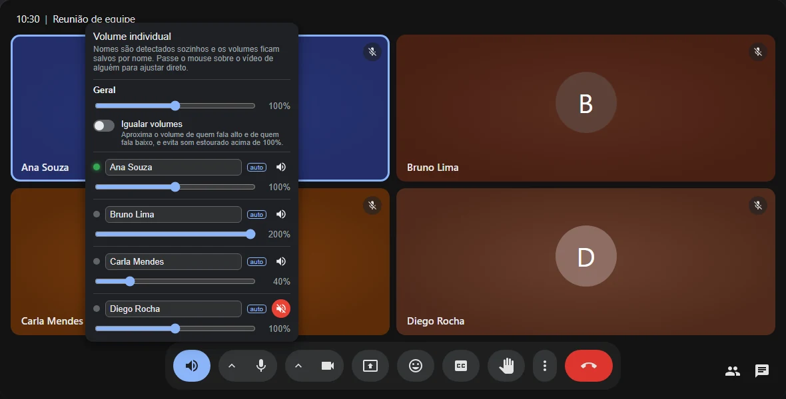
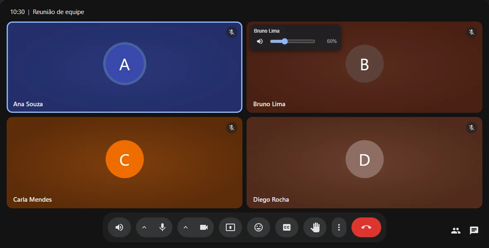
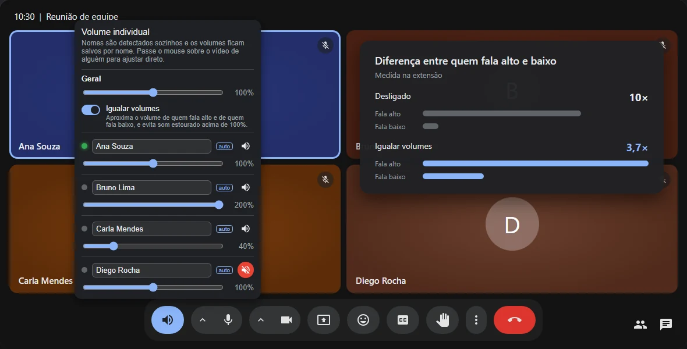
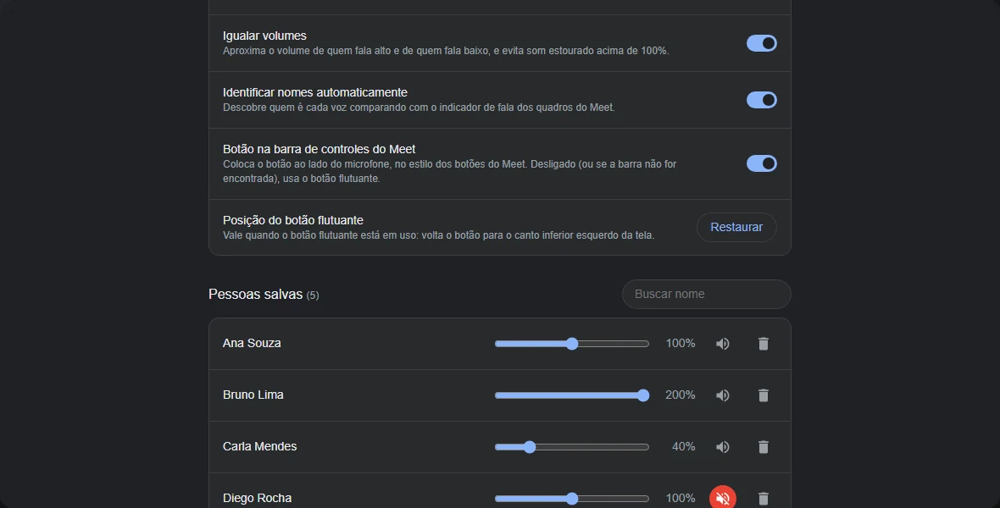

Ajuste direto no vídeo
Passe o mouse sobre alguém e mova o controle. Não precisa nem abrir o painel.
Alguém fala alto demais e outra pessoa quase não dá para ouvir? Ajuste o volume de cada participante separadamente — como no Discord.
Grátis · Sem conta · Nada sai do seu navegador

O botão fica na barra do próprio Meet, ao lado do microfone, no mesmo estilo dos outros botões.
Abaixe quem fala alto, aumente quem fala baixo ou silencie só uma pessoa.
A extensão descobre quem é cada voz pelo indicador de fala do Meet.
Ajustou uma vez? Nas próximas chamadas o volume daquela pessoa já vem certo.
O áudio é processado no seu computador. Sem servidores, anúncios ou rastreamento.
Passe o mouse sobre alguém e mova o controle. Não precisa nem abrir o painel.

Opcional: aproxima quem fala alto de quem fala baixo — a diferença cai de 10× para 3,7× — e evita som estourado acima de 100%.

Na página de opções você revisa, ajusta e apaga os volumes salvos de cada pessoa.

Leva menos de um minuto.
Instale a extensão pela Chrome Web Store.
Entre numa chamada do Google Meet. O botão de volume aparece na barra, ao lado do microfone.
Clique no botão ou passe o mouse sobre o vídeo de alguém e ajuste o volume.
A extensão foi feita para não precisar de nada além do próprio navegador.
Sim, totalmente — sem anúncios, sem versão paga e sem conta.
Não. O ajuste vale só para o que você ouve, no seu computador. Para os outros nada muda.
Ela é feita e testada no Google Chrome. Navegadores baseados no Chromium que instalam extensões da Chrome Web Store, como Edge e Brave, devem funcionar, mas não são testados oficialmente.
A identificação automática precisa que a pessoa fale sozinha por um ou dois segundos. Se mesmo assim não aparecer, é só digitar o nome no painel — o volume fica salvo para esse nome.
Abra uma issue no GitHub. Se puder, use o botão “Gravar diagnóstico” do painel e anexe o arquivo: ele troca os nomes por apelidos.
Instale grátis e ajuste na próxima chamada.